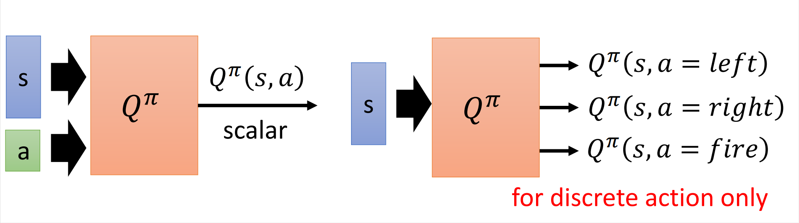
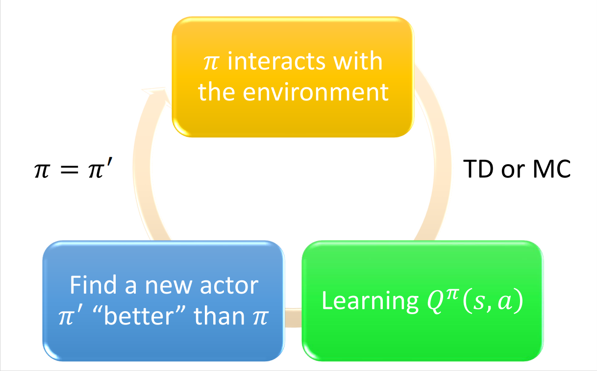
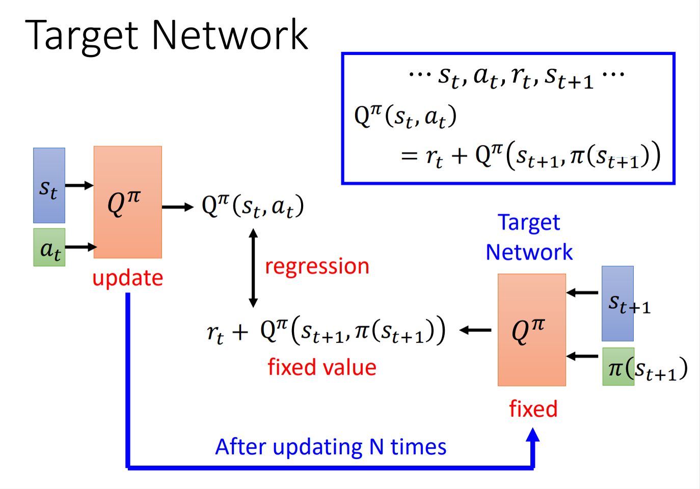
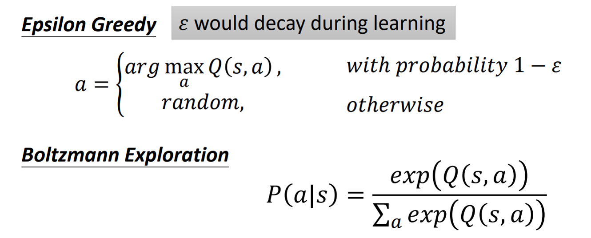
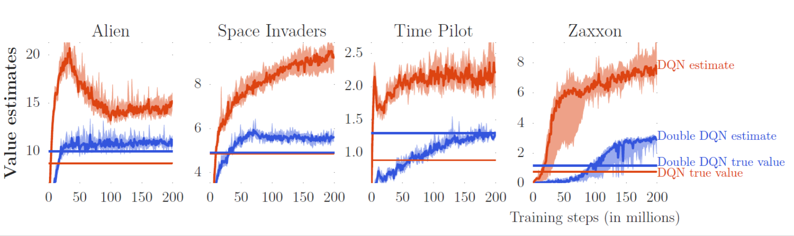

在RL中，学习了critic的方法。本篇文章将介绍另一种设计critic的方法：State-action value function。
State-action value function $Q^\pi(s,a)$
$Q^\pi(s,a)$的定义是给定一个actor $\pi$，在state $s$下采取action $a$后期望得到的reward。
通俗来讲，在state $s$下，actor不一定采取action $a$，但我们强制采取action $a$，后面让actor自己玩下去会得到的cumulated reward。
$Q^\pi$有两种表示方法，其中第二种只适用于action是离散的情况：

训练出这样一个Q-function，即可做RL，叫做Q-learning。整体框架如下：

- 初始化一个policy $\pi$（可随机）
- 用这个policy去learn一个Q-function（用TD or MC）
- 只要learn到这个Q-function，那么一定能找到一个更好的policy $\pi^\prime$
如何定义“更好”：对于所有的state $s$，$V^{\pi^\prime}(s)\geq V^\pi(s)$
有了Q后，找$\pi^\prime$的方法：$\pi^\prime(s)=\mathop{\arg\max}\limits_aQ^\pi(s,a)$
上式的意思为，假设我们已经learn到了$\pi$的Q-function，现在给定某一个state $s$，我们把所有可能的action一一代入Q-function，看看哪个a可以让Q-function的value最大，那么这个action就是$\pi^\prime$会在$s$下采取的action。
实际上没有一个network来确定$\pi^\prime$，他是根据Q-function推出来的。但是这里存在的问题是action可能是continuous的，这个后面解决。
[scode type=”share”]对$\pi^\prime$一定比$\pi$好的证明：
已知$\pi^\prime(s)=\mathop{\arg\max}\limits_aQ^\pi(s,a)$，要证明对于所有的state $s$，$V^{\pi^\prime}(s)\geq V^\pi(s)$
证明：
$V^\pi(s)=Q^\pi(s,\pi(s))\leq\mathop{\max}\limits_aQ^\pi(s,a)=Q^\pi(s,\pi^\prime(s))$
即$V^\pi(s)\leq Q^\pi(s,\pi^\prime(s))$
而
[/scode]
Tips of Q-learning
Target Network
假如我们使用TD来定义critic，那么有：$Q^\pi(s_t,a_t)=r_t+Q^\pi(s_{t+1},\pi(s_{t+1}))$
在learn的时候会发现这样的function并不好learn。假设这是一个regression的问题，那么你会发现output $Q^\pi(s_t,a_t)$和target $r_t+Q^\pi(s_{t+1},\pi(s_{t+1}))$都是会变化的。相当于要fit的target一直在变化。那么我们在实作的时候会固定产生target的$Q^\pi$的参数，这个$Q^\pi$叫做target network，那么此时得到的target就是固定的了。实作时，会update多次后统一$Q^\pi$。

Exploration
由于$a=\mathop{\arg\max}\limits_aQ(s,a)$，policy只会采取固定的action。
假设要估测在state $s$采取某个action得到的Q-value，那么一定要在那个state采取过那个action（如果Q-function是network的话，问题不会非常严重）。如果没采取过那个action，那么估测出来的Q-value就会都是一个初始值。这样就只会一直sample到之前采取过的某个action。
因此就需要Exploration，让actor探索更多的可能。
解决方法：

Replay Buffer
把每个policy和环境互动搜集到的资料放到replay buffer里面，装满后丢掉旧的资料。因此replay buffer里面装的是很多不同的policy搜集到的资料。训练的时候，在replay buffer里随机sample一些data去训练。这样做好似变成了off-policy的，这样做的好处：
- 大大减小和环境互动搜集资料的时间
- data更加diverse
[scode type=”yellow”]我们需要的是$\pi$的experience，但如果用replay buffer的话，不就混杂了一些其他的experience吗？
在理论上没有问题，留作思考[/scode]
Typical Q-learning Algorithm
- 初始化Q-function $Q$以及target Q-function $\hat Q=Q$
- 对于每个episode
- 对于每个step $t$
- 给定一个state $s_t$，依据$Q$采取一个action $a_t$（exploration）
- 获得reward $r_t$，到达新的state $s_{t+1}$
- 将$(s_t,a_t,r_t,s_{t+1})$放入replay buffer
- 从replayb buffer中sample一批$(s_i,a_i,r_i,s_{i+1})$
- 计算target $y=r_i+\mathop{\max}\limits_a\hat Q(s_{i+1},a)$
- 更新$Q$使得$Q(s_i,a_i)$和$y$越近越好（regression）
- 每C步令$\hat Q=Q$
- 对于每个step $t$
Double DQN
Q-value经常会被高估：

实际的值往往小于Q-value，用Double DQN估测的值会和实际的值很接近。